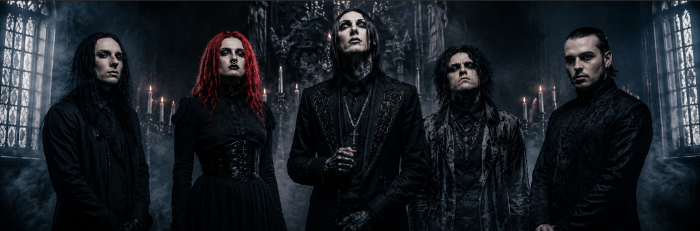
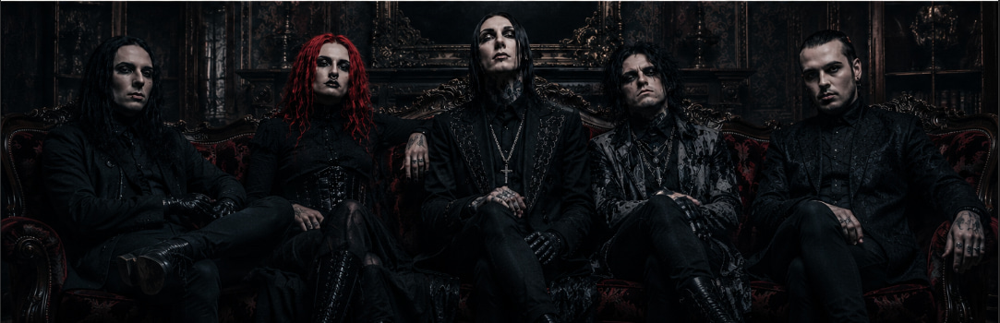
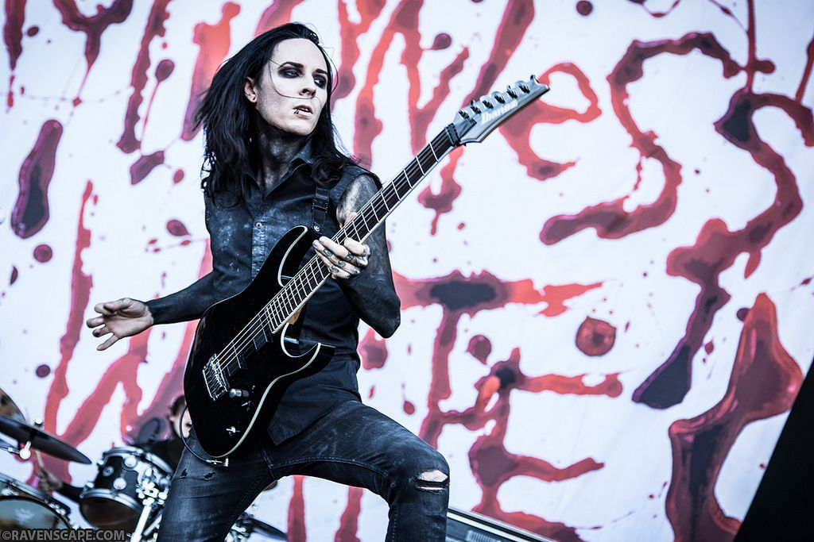
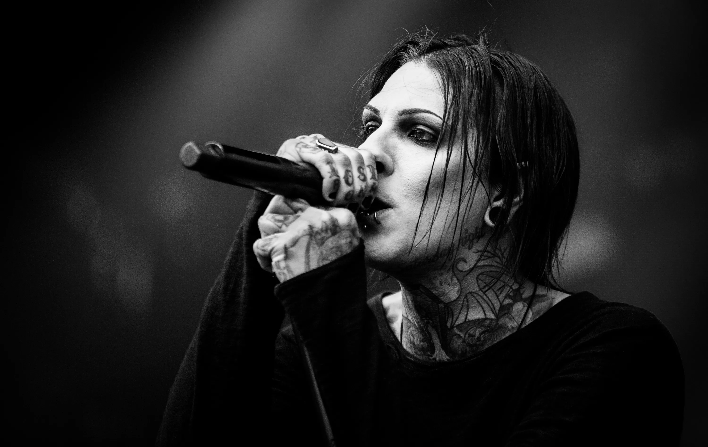
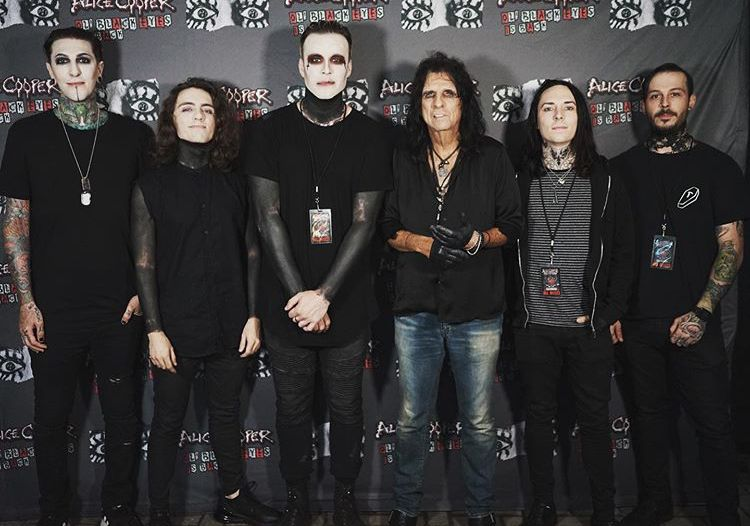
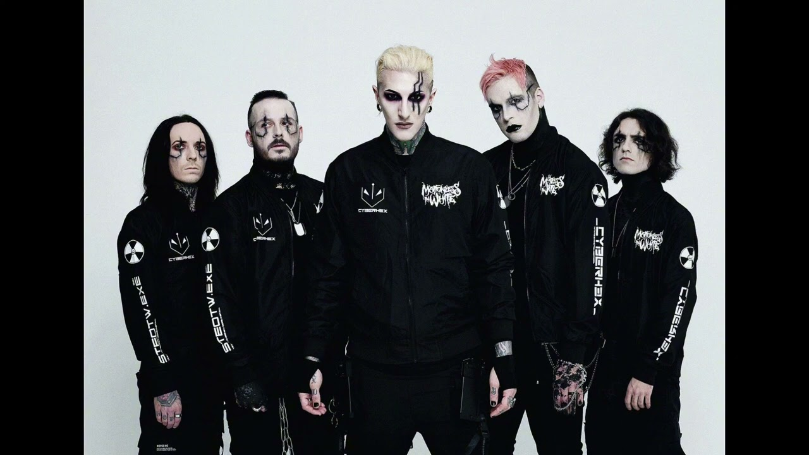

История Motionless in Black начинается с underground-сцены, старых клубов, красного света и тяжёлой музыки.
Motionless in Black — вымышленная gothic metalcore группа с мрачной атмосферой, тяжёлым звучанием и театральными концертами.

История Motionless in Black начинается с underground-сцены, старых клубов, красного света и тяжёлой музыки.

Группа сочетает metalcore, industrial metal и gothic rock.

Чёрные костюмы, грим, свечи, дым и атмосфера хоррора.

Тексты песен рассказывают о страхе, одиночестве и внутренней тьме.

Концерты Motionless in Black выглядят как настоящий тёмный спектакль.

Каждый участник имеет собственный сценический образ и символ.
Каждый альбом Motionless in Black — отдельная глава общей истории.